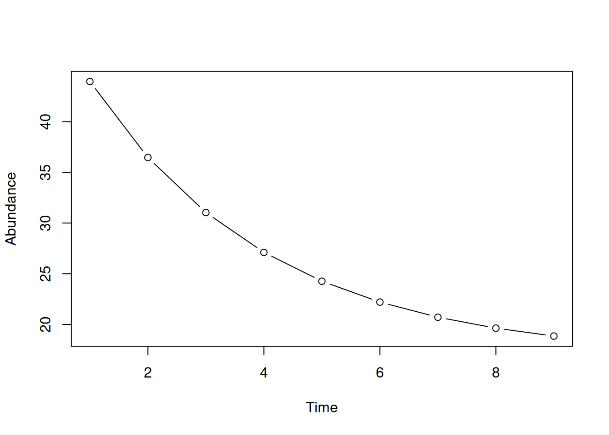

install.packages("marked")Lab 13 – Estimating survival, recruitment, and growth rate with capture-mark-recapture data
Due by 5:00pm on Friday
The purpose of this lab is to learn how to use the R package ‘marked’ to estimate survival, recruitment, and growth rate using mark-recapture data. Put your code and answers in a Word file and upload it to ELC. The use of RMarkdown or Quarto is encouraged but not required.
Exercise I: Estimating Canada Warbler survival with the CJS model
The Canada Warbler (Cardellina canadensis) is a long-distance migratory bird that primarily breeds in the boreal forests of Canada. However, a small portion of the range extends down through the Appalachian Mountains to northern Georgia.
Canada Warblers are too small to use telemetry to estimate annual survival, so we use mark-recapture methods instead. Each year, we visit multiple sites and run mist-nets for 4 consecutive days at each site. All newly captured individuals are marked with a uniquely numbered metal band, and a unique combination of color bands.
The data come from five years (2014–2018) of surveys. Even though “the robust design” was used, the data were collapsed so that only one value (0 or 1) is shown for each year for each individual.
Assignment
- Import the capture histories in the file
cawa-cjs.inp. - Fit 4 models:
- \(\Phi(.)p(.)\) – No variation in apparent survival or capture probability
- \(\Phi(t)p(.)\) – Temporal variation in apparent survival
- \(\Phi(.)p(t)\) – Temporal variation in capture probability
- \(\Phi(t)p(t)\) – Temporal variation in apparent survival and capture probability
- What is the best model according to AIC?
- Create a table to report the estimates (on the probability scale), standard errors, and 95% confidence intervals for \(p\) and \(\Phi\) from the best model.
Exercise II: The Jolly-Seber model for estimating survival, recruitment, and growth rate
Stinkpots (Sternotherus odoratus) were captured, marked, released, and occasionally recaptured at Dean’s Pond at Whitehall Forest using baited hoop traps. Sampling began in 2007.
Assignment
- Import data from the file
CH-SO-Dean-AllYears.inp. - Fit a Jolly-Seber model with constant capture probability (\(p\)), constant entrance probabilities (
pent, \(b_t\)), and temporal variation in apparent survival. - Use the parameter estimates to compute:
- Super-population size
- The number of recruits in each time interval
- Abundance at each time point. Hint: apparent survival (\(\Phi\)) varies over time.
- Growth rate for each time interval (\(\lambda_t\)).
- Plot \(\lambda_t\) over time. Note that the example shows how to plot \(N_t\) over time. Here you need to plot \(\lambda_t\) over time.
Example analysis
We will fit models using the R package ‘marked’. You can install it using the following command, which only needs to be run once:
You can load the package with this command:
library(marked)Capture history data are in a text file formatted for program MARK. We can important the data and prepare them for ‘marked’ using code like this:
example.cjs.data <- read.table("example-cjs.inp", sep=" ",
colClasses=c("character","character"),
col.names=c("ch", "count"))The data must have a column called ch, formatted as a character vector. The second column (count) is not important, and it can be ignored.
head(example.cjs.data, n=4) # Show the first 4 lines of data ch count
1 10000 1;
2 00100 1;
3 01000 1;
4 01000 1;Everything looks good, so we’re ready to fit a model with the crm function.
Cormack-Jolly-Seber model
The CJS model parameters are: apparent survival (Phi, \(\Phi\)) and capture probability (\(p\)). Let’s start with the simplest CJS model in which \(\Phi\) and \(p\) are constant:
phi0.p0 <- crm(data=example.cjs.data, model="CJS", hessian=TRUE,
model.parameters=list(
Phi=list(formula=~1), ## No variation
p=list(formula=~1))) ## No variationThe data argument is for the capture history data. The model specifies the type of model you want to fit. We will use CJS and JS. If hessian=FALSE, you won’t get standard errors or confidence intervals. The model.parameters argument is one to focus on. This is where you specify the sources of variation in apparent survival and capture probability.
Typing the name of the object dispays the AIC score and the estimates on the logit scale.
phi0.p0
crm Model Summary
Npar : 2
-2lnL: 154.104
AIC : 158.104
Beta
Estimate se lcl ucl
Phi.(Intercept) 2.321548 2.2567894 -2.101759 6.744855
p.(Intercept) -1.977161 0.4428573 -2.845161 -1.109161To see the esimates on the probability scale, we need to use the predict function.
predict(phi0.p0)$Phi
occ estimate se lcl ucl
1 4 0.910646 0.1836347 0.1089259 0.9988245
$p
occ estimate se lcl ucl
1 5 0.1216218 0.04731041 0.05493197 0.2480274If we think survival probability varies over time, but detection probability is constant, we can change the formula:
phiTime.p0 <- crm(data=example.cjs.data, model="cjs", hessian=TRUE,
model.parameters=list(
Phi=list(formula=~time), ## Temporal variation
p=list(formula=~1))) ## No variationNotice how the results now show survival probability for each time period:
predict(phiTime.p0)$Phi
time occ estimate se lcl ucl
1 4 4 0.6527671 0.264050300 1.608282e-01 0.9485600
2 3 3 0.6808526 0.250026508 1.827878e-01 0.9531561
3 2 2 0.9998875 0.006369266 5.587714e-45 1.0000000
4 1 1 0.8994609 0.401574678 1.482594e-03 0.9999814
$p
occ estimate se lcl ucl
1 5 0.1557208 0.04990822 0.08058259 0.2796134Jolly-Seber model
The JS model can be used to estimate abundance, apparent survival, recruitment, growth rate, and capture probability. First, let’s import the example data:
example.js.data <- read.table("example-js.inp", sep=" ",
colClasses=c("character","character"),
col.names=c("ch", "count"))The new parameter that will be estimated is called pent (\(b_i\)), which is the entrance probability describing the probability that an individual entered the population during a particular occasion. Here’s a model in which all 3 parameters are constant.
js.phi0.pent0.p0 <- crm(data=example.js.data, model="JS", hessian=TRUE,
model.parameters=list(
Phi=list(formula=~1), ## No variation
pent=list(formula=~1), ## No variation
p=list(formula=~1))) ## No variationHere are the estimates on the probability scale:
js0est <- predict(js.phi0.pent0.p0)
js0est$Phi
occ estimate se lcl ucl
1 1 0.7239384 0.03646061 0.6471427 0.789458
$p
occ estimate se lcl ucl
1 1 0.5941143 0.06060417 0.4721316 0.705492
$pent
time occ estimate se lcl ucl
1 2 2 0.05722326 0.01154076 0.03837741 0.08451043
2 3 3 0.05722326 0.01154076 0.03837741 0.08451043
3 4 4 0.05722326 0.01154076 0.03837741 0.08451043
4 5 5 0.05722326 0.01154076 0.03837741 0.08451043
5 6 6 0.05722326 0.01154076 0.03837741 0.08451043
6 7 7 0.05722326 0.01154076 0.03837741 0.08451043
7 8 8 0.05722326 0.01154076 0.03837741 0.08451043
8 9 9 0.05722326 0.01154076 0.03837741 0.08451043
$N
estimate se lcl ucl
1 14.0758 5.313293 6.716731 29.4977The interpretations of Phi (\(\Phi\)) and \(p\) are the same as in the CJS model. The estimate of \(N\) is not what you might expect. Instead of \(N\) being the number of individuals alive at a single point in time, it is the number of individuals alive during the entire sampling period that were not detected. For this reason, \(N^{\mathrm{super}}=n+N\) is often called the super-population size.
So, how do we calculate \(N_t\), abundance at each time point? We will tackle this in several steps. First, let’s compute the number of recruits during each time period (\(R_t=N^{\mathrm{super}}\times b_t\)).
n <- nrow(example.js.data) # number of individuals captured
Nsuper <- n+js0est$N$estimate # Super-population size
Nsuper[1] 81.0758b <- js0est$pent$estimate # Entrance probabilities after first time period
b0 <- 1-sum(b) # Compute first entrance probability
round(b, digits=3)[1] 0.057 0.057 0.057 0.057 0.057 0.057 0.057 0.057R <- Nsuper*b # Recruits
R[1] 4.639422 4.639422 4.639422 4.639422 4.639422 4.639422 4.639422 4.639422Next, extract the estimate of apparent survival, which doesn’t vary over time in this example:
Phi <- js0est$Phi$estimate ## Apparent survival probability
Phi[1] 0.7239384Now we’re ready to calculate abundance
nYears <- length(R)+1
N <- rep(NA, nYears)
N[1] <- Nsuper*b0 ## Initial abundance
N[2] <- N[1]*Phi + R[1] ## Abundance in year 2
N[3] <- N[2]*Phi + R[2] ## Abundance in year 3
N[4] <- N[3]*Phi + R[3] ## Abundance in year 4
N[5] <- N[4]*Phi + R[4] ## Abundance in year 5
N[6] <- N[5]*Phi + R[5] ## Abundance in year 6
N[7] <- N[6]*Phi + R[6] ## Abundance in year 7
N[8] <- N[7]*Phi + R[7] ## Abundance in year 8
N[9] <- N[8]*Phi + R[8] ## Abundance in year 9
round(N, digits=0)[1] 44 36 31 27 24 22 21 20 19An alternative to typing out the equation each year, we could compute abundance in years 2 through 9 in a for loop:
N[1] <- Nsuper*b0
for(t in 2:nYears) {
N[t] <- N[t-1]*Phi + R[t-1]
}
round(N, digits=0)[1] 44 36 31 27 24 22 21 20 19We can calculate the growth rate \(\lambda_t = N_{t}/N_{t-1}\):
lambda <- N[2:9]/N[1:8]
round(lambda, digits=3)[1] 0.829 0.851 0.873 0.895 0.915 0.933 0.948 0.960Clearly, the population is declining. Let’s visualize the results:
plot(1:nYears, N, type="b", xlab="Time", ylab="Abundance")